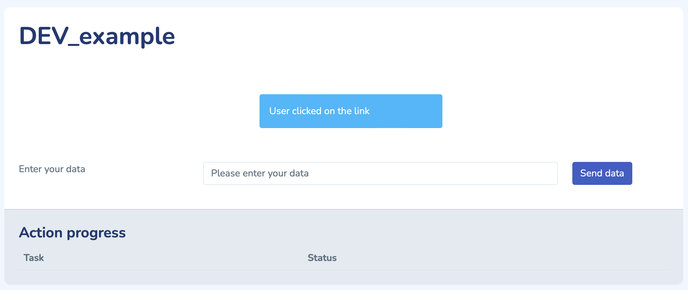

Site handler
Each tool, or site handler, represent a website. A site handler consists, a minima, of a set of pages, and a site conf.
Pages
Basic page creation
Let’s look at a minimum webpage example:
bp = Blueprint('prog', __name__, url_prefix='/prog')
@bp.route('/firmware', methods=['GET', 'POST'])
def firmware():
return render_template("base_content.j2")
@bp.route('/software', methods=['GET', 'POST'])
def software():
return render_template("base_content.j2")
It is good practice to regroup pages that are relative to the same matter. For instances, we can regroup all the pages that are relative to the programming of the station together.
This grouping match the notion of blueprint in flask. Blueprints will be a collection of pages that share the same base address. As a results, the two pages in the example will have “prog” as base address.
When a user click a link, he will be redirected to a function. The directive @bp.route('/software', methods=['GET', 'POST']) indicate that the function will be at address /prog/software and that valid call methods are “GET” and “POST”
The function called is than free to do any kind of work, and will then return some html content. To facilitate the content creation, the framework uses the language “jinja”. This allows to generate html pages with python variables easily.
Generating page content
To generate page content, the framework provides a set of usefull helper functions.
A basic page could be the following:
from OuFNis_DFDIG.modules import DEV_example
bp = Blueprint('help', __name__, url_prefix='/help')
@bp.route('/dev_example', methods=['GET', 'POST'])
def dev_example():
##Init the view
dev = utilities.util_view_init([DEV_example.DEV_example])
##Handle user data
if request.method == "POST":
data = utilities.util_post_to_json(request.form.to_dict())
text = "User posted data"
else:
text = "User clicked on the link"
##Add some content to the page
utilities.util_view_add_info_text(dev, DEV_example.DEV_example, text)
inputs = []
inputs.append({"label": "Enter your data", "id": "user_text", "value": "Please enter your data", "type": "text"})
utilities.util_view_add_multi_input(dev, DEV_example.DEV_example, "user_in", inputs, "Send data")
##Render
return render_template('base_content.j2', content=dev, target="help.dev_example")
The code does the following:
Generate a blueprint “help”
Link the function
dev_example()to the blueprintInitialize a view object, based on the module
DEV_example(). Viewing object are always linked to modules, and use it’s name as title in the webpage. Please note that the module argument is a list: it is possible to add several modules; each of them will be represented by a different section in the webpage.Detect if the users came here with a link (“GET” method) or throught a formulaire (“POST” method), and generate a text accordingly
Add this text to the view object
Generate a text input for the user to display, and add it for rendering
The resulting page will be:
{kind=link}
Head to the utilities() functions documentation for more information on how to populate the web page.
Site configuration
Every site handler should have its own site-conf, which inherits from the basic site-conf. For more information, please see the documentation: site_conf.Site_conf()
Other
The site conf also allows to:
Register topbar buttons
Indicate the site handler information (name, version, etc..)
Add specific optional javascript files
Activate login and authorizations
etc.
Finaly, some function of the basic site conf can be overwritten to extend some possiblities, please see the documentation site_conf.Site_conf()
Module
Modules are either threaded actions or simple actions that are meant to do a set of jobs. Threaded actions are registered in the Thread manager, and can be used for long term job. The scheduler offers a set of communication function to commicate the progress of the function to the user.
The simplest module is:
class DEV_example(threaded_action.Threaded_action):
m_name = "DEV_example"
def action(self):
return
In its bare form, this module does nothing, and is just registering it’s name, for use with the viewing functions.
The job to be done takes place in the action() function. When the page engine calls for the start() function of the parent calss Threaded_action(), the parent initialize the thread, call the action, and when returning, destroy the thread.
In this simple example, the thread will be destroyed as soon as it is created, however, on longer action like programing a firmware, the thread can live a longer time. It is even possible to prevent destruction of the thread so that it continues to work ad vitam eternam.
File structure
The site handler basic structures is:
| website1
| ├── modules (List of the modules)
| ├── pages (Pages generation function)
| ├── workflows (Workflow ressources)
| ├── config.json
| ├── site_conf.py